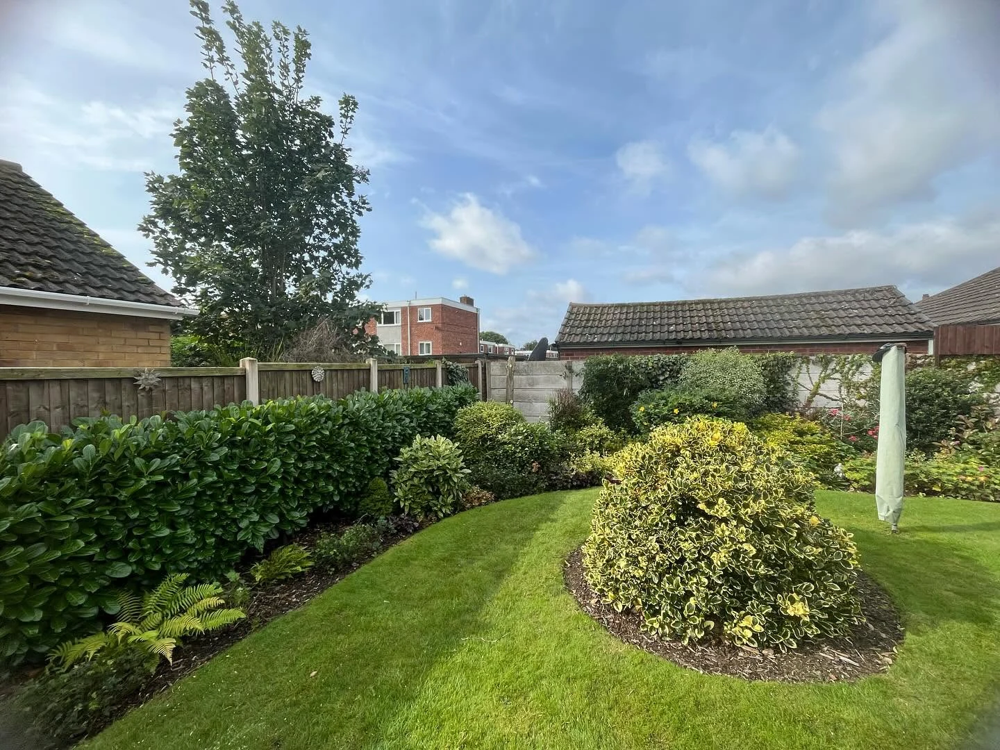
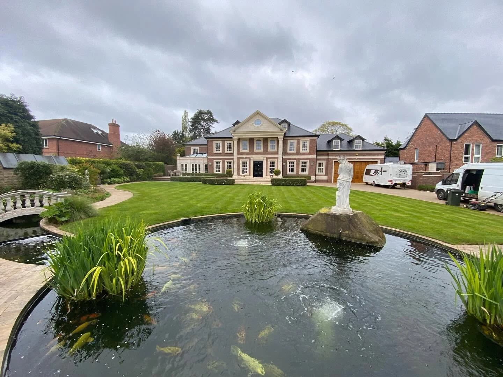
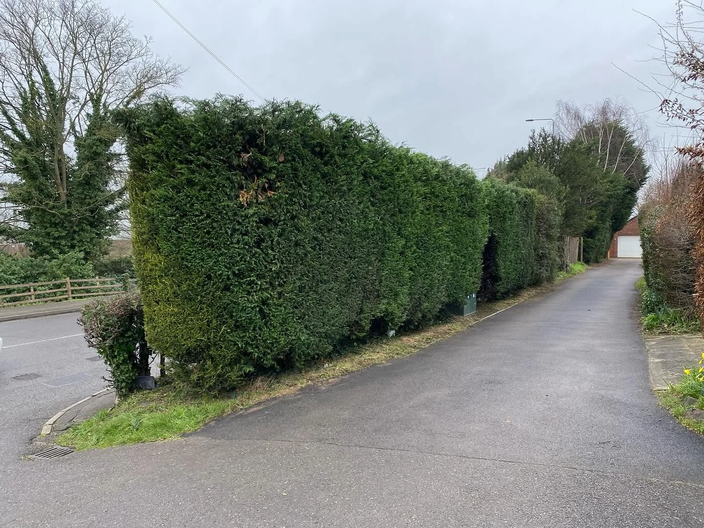
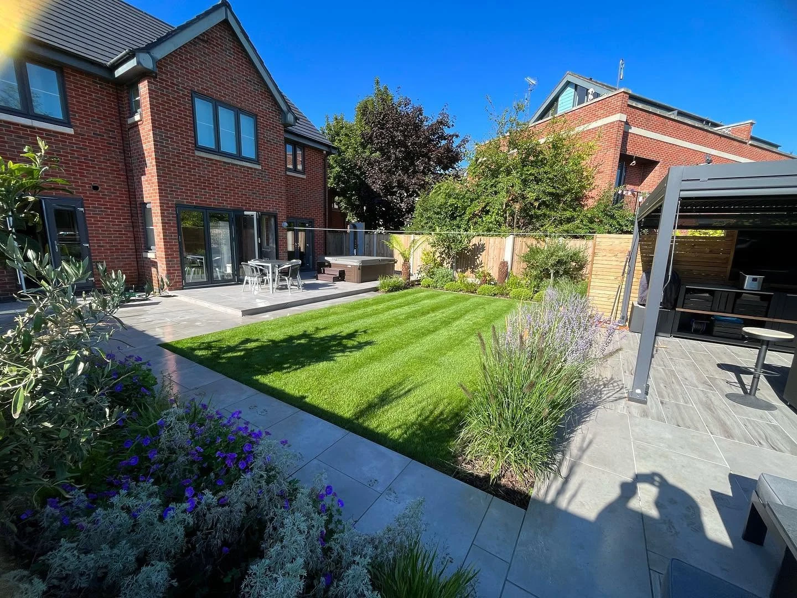
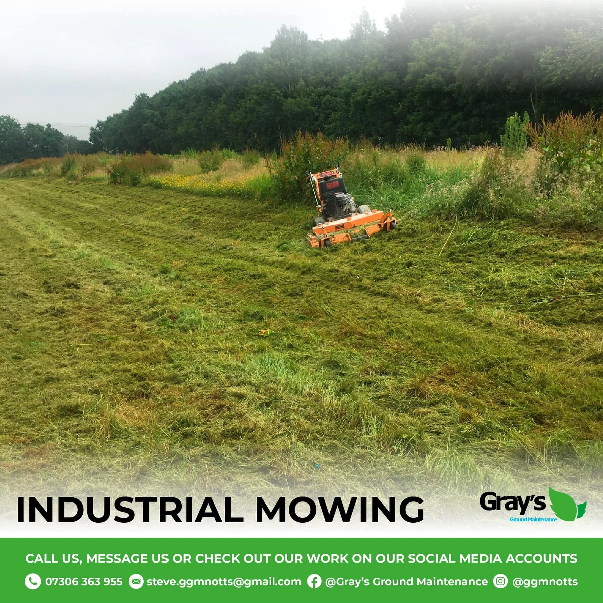
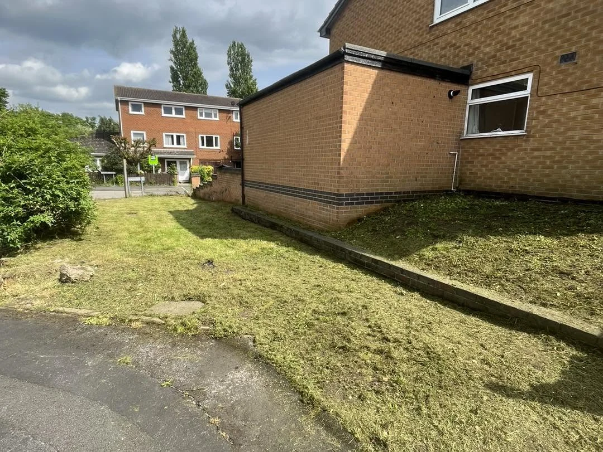
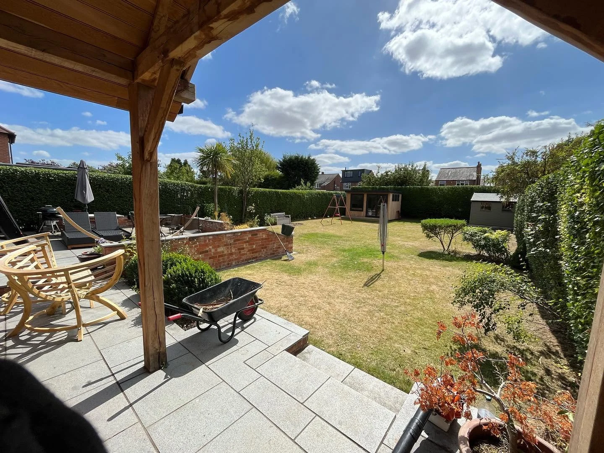
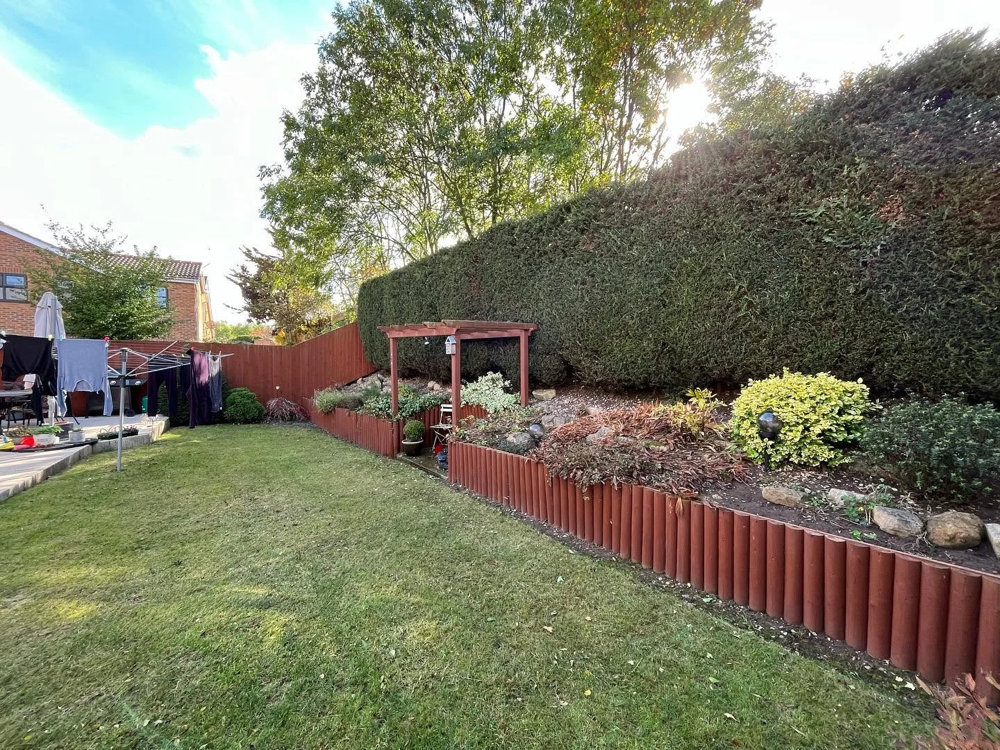

Garden Maintenance
Grass cutting, border care, pruning, seasonal tidy-ups and ongoing private garden maintenance.

PROFESSIONAL • RELIABLE • FULLY INSURED
Keeping gardens, grounds and commercial spaces looking their best — all year round.
OUR SERVICES
From one-off garden tidy-ups to regular commercial grounds care, Gray’s keeps outdoor spaces under control and looking sharp.

Grass cutting, border care, pruning, seasonal tidy-ups and ongoing private garden maintenance.

Hedge trimming, reductions and regular maintenance for everything from domestic hedges to large boundaries.

Reliable maintenance for commercial sites, developments, managed properties and larger outdoor spaces.

Heavy-duty mowing and vegetation control for larger plots, rough grass and commercial grounds.

Overgrown gardens brought back under control with cutting, clearance and tidy removal of green waste.

TRUSTED QUALITY
Gray’s Ground Maintenance has more than 20 years’ experience across private and commercial garden maintenance. Work has included NHS hospitals, universities, sports turf specialists, councils, highways, property management companies, property developers and 5-star house builders.
Only professional equipment from brands including Honda, Stihl and Husqvarna is used, backed by public liability insurance up to £5,000,000.
SEE GRAY’S AT WORK
A closer look at the kind of work Gray’s carries out across private gardens, larger grounds and commercial spaces.
Send photos for a quoteREAL RESULTS
Actual Gray’s Ground Maintenance jobs — no stock project imagery.
Drag the slider to see the large hedging reshaped and brought back under control.
Drag the slider to reveal the cleared and tidied result.
LARGE GARDENS & GROUNDS
From substantial private gardens to commercial grounds, we provide dependable ongoing maintenance that keeps every area sharp, tidy and cared for.

CUSTOMER REVIEWS
“Really pleased with Gray's Ground Maintenance. Quick to respond… they came out two days later and did a really good job.”
Elzbth Wlsn Facebook recommendation“Amazing professional service, lovely guys! … did a great job, in very rainy weather… Would recommend without hesitation.”
Rachel Drew Facebook recommendation“Superb work again on taming our very long and high garden hedges — so tidy and professional.”
Siobhan Duffy Facebook recommendationExperience across
GET IN TOUCH
Call, message or send photos for a free, no-obligation quote.
235 Ruddington Ln
Wilford, Nottingham
NG11 7DB
Facebook: Gray’s Ground Maintenance
Instagram: @ggmnotts